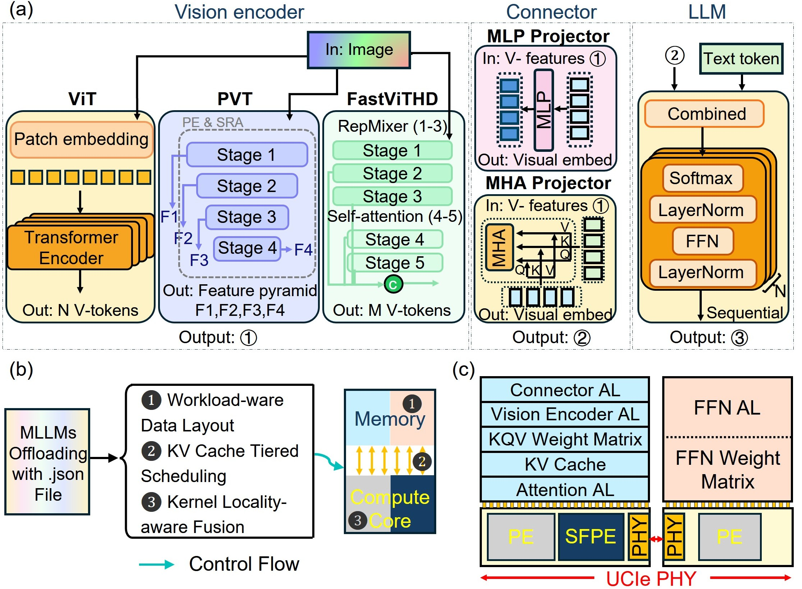
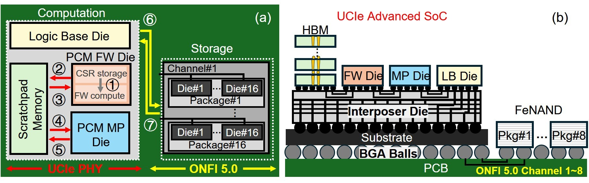
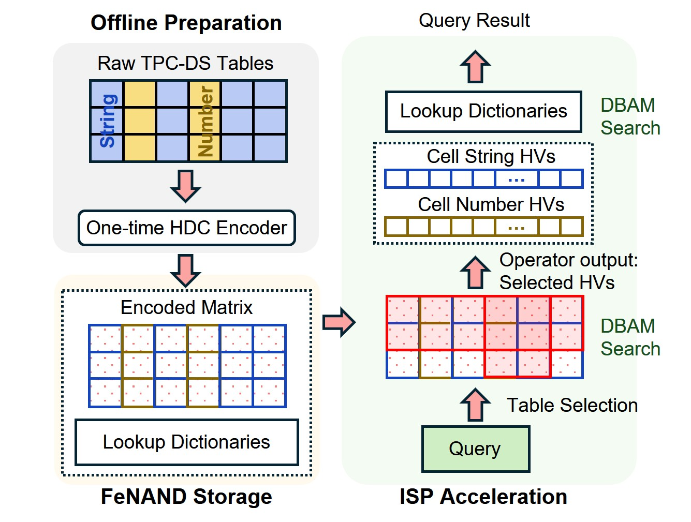
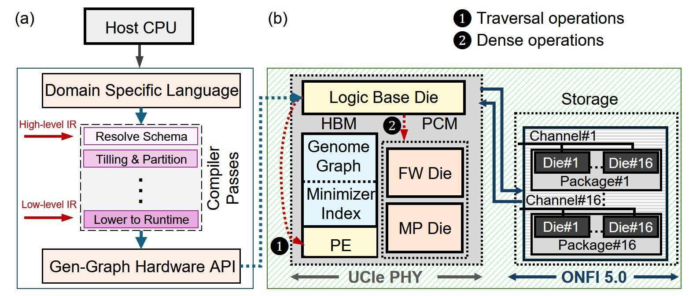

CHIME · (PDF)
- Heterogeneous PIM architecture for efficient AI workloads.
- System co-design: scheduling + mapping + performance/energy modeling.
- Designed end-to-end evaluation with realistic workloads.
Ph.D. Candidate @ UC San Diego (SEELab)
I am a Ph.D. candidate in Electronic and Computer Engineering at UC San Diego, advised by Prof. Tajana Rosing in the Systems Energy Efficiency Lab (SEELab). My research focuses on heterogeneous processing-in-memory (PIM) architectures and system co-design for efficient AI and graph reasoning.
I build full-stack solutions from algorithm scheduling to cycle-level simulation and hardware mapping, targeting high throughput and energy efficiency.
Outside research, I enjoy singing.
2017 – 2021
B.S. in Electronic Science and Technology
2018 – 2020
B.A. in International Economy and Trade
2021 – 2024
M.S. in Electronic Information
2024 – 2027
Ph.D. in Electronic and Computer Engineering




I can provide a full publication list upon request.